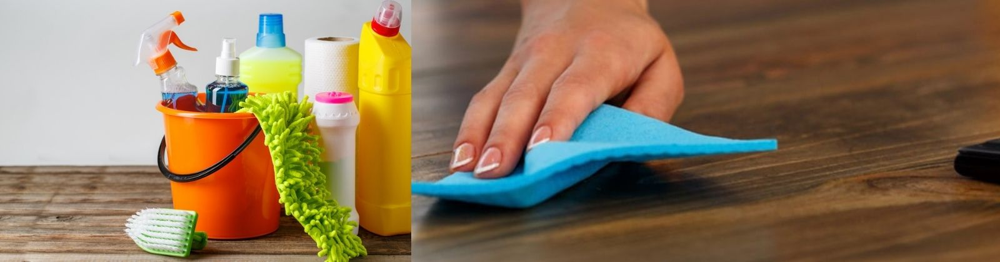

CLEANLINESS - mandatory for livelihood
Cleanliness and order are not matters of instinct , they are matters of education , and like most great things , you must cultivate a taste for them
- BENJAMIN DISRAELI
Cleanliness is a state of purity, clarity, and precision.
- SUZE ORMAN
Cleanliness can be defined as the purest emblem of the mind.
- JOSEPH ADDISON
Cleanliness is an important quality of life. In fact, it is a habit which is often considered just next to godliness.
The health of person largely depends on the surrounding,both mentally and physically .The environment related factors include many things.Including from the water we drink,the air we breathe or the waste we dispose.According to the latest article of 2020 from timesofindia, Bihar in the fifth annual cleanliness survey with several of its’s cities rank in the bottom of the cleanliness list
According to the recent survey , Poor care quality leads to more deaths than insufficient access to healthcare--1.6 million Indians died due to poor quality of care in 2016, nearly twice as many as due to non-utilization of healthcare services .

So why is cleanliness important for our livelihood?
1. Cleanliness is a habit not related to the wealth of a person, rather it is a habit which depicts the qualities a person is enriched with.
2. Cleanliness also effects your brain and increase the work productivity.
A recent study highlighted that there was a relationship between cleaning and learning. In fact, 88% of students reported that they became distracted when they were in a moderately cluttered environment.
3. Not every decision you make regarding health is going to affect others. After all, if you decide to eat food that is dirty, you’ll probably get sick but this won’t affect anyone else around you. Living alone in a dirty house or apartment will also harm yourself but won’t affect others.